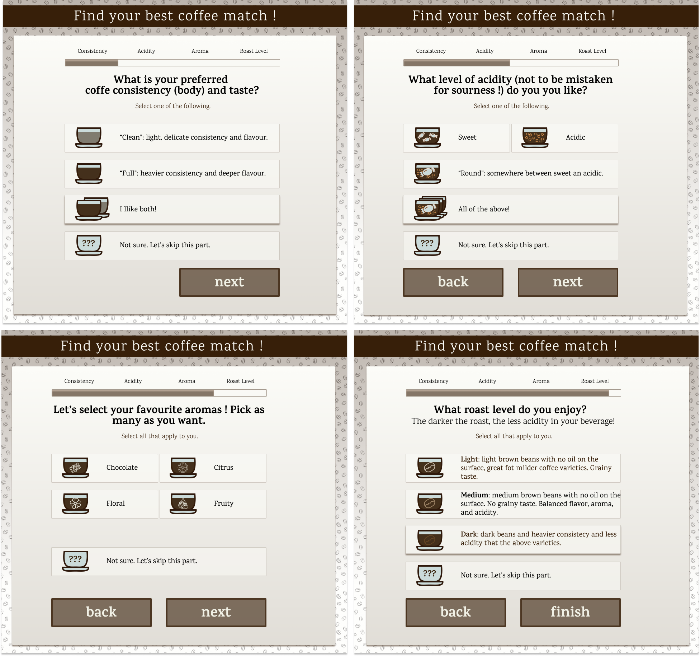

An interactive online form UX/UI for Impact Roasters to help web users pick the perfect coffee beans
Project participants brainstorming
GOALS
To design and develop a new feature needed by the users via feedback to the stakeholders. What's the user's
motivation? To be able to choose their coffee effortlessly and make an informed decision, even if they are
total coffee beginners and don't even know how to start navigating themselves through the myriad of options,
criteria and the mighty jargon they simply do not understand without having an expert on their side. (Or Uncle
Google.)
To deliver tool that will solve the above problem after a solid research, identifying the most important pain
points and coming up with a solution. We will need to take a closer look at what makes it difficult to make tha
right choice and how we might improve the process.
METHODOLOGY HIGHLIGHTS
The Double Diamond 💎💎 with constant iteration and
testing, user-centered design and empathy.
UXR: Stakeholder's interview, 1:1 interviews. Persona creation, wireframes, interactive prototype, visual design,
UX writing. Testing and implementing changes on each iteration.
PEOPLE and TOOLS
We will be working with real users, test participants, stakeholders* and developers*.
* Thank you all for letting me use the group picture with your lovely faces!
My tools are simply Figma, a pen and pencil, a few crayons and some paper. Plus a lot of great coffee.
DESIGN PROCESS HIGHLIGHTS
DOUBLE DIAMOND: DISCOVERY AND DEFINITION
Status Quo at a glance
We have a functioning, information-rich
website
with an established stylescape.
There is a working prototype of an interactive questionnaire done in React.js by our brave devs,
but no UX yet.
We have some coffee criteria and facts in our database so we can use those to build up.
Anything from the .JSON file below could be displayed on the front-end. That's a great start.
As a UX person, I am given my first bits of coffe know-how from Impact Roasters leaflets and guides.
Let's also remebmer I'm about to hang out with a team of coffe nerds who know methods of brewing
and all kind of magic I am not aware yet.
Impact Roasters Leaflets
Status Quo: the prototype I am to work with
It's hard-coded example of a questionnaire logic from the perspective of a developer looking at the possibilities
the data offers. The language for the form was provided by coffee-pros so let's see how manageable that will by
for a random user.
The phrasing is a bit difficult for me. I got stuck at the 1st question not sure what is meant. After all, I am a
beginner but so might be any other user. Can we translate the maker-centric language into something easier to
follow? Of course.
There is no progress bar yet so I am not sure how long the form is. We will certainly add the bar.
The functionality of the form is done by the book so that the user has the escape option to go back and change
the answer. Mistake prevention: check.
The result page is to be discussed but we can use quite a few criteria because we have useful data in our JSON
files!
Wohoo! Thats's a great beginning.
JSON file: lots of cool data to use :)
Form (proto version before I took over)
UXR and tests: iteration 1
Ideally we want to mix qualitative an quantitative methods.
First of all: a simple desktop research.
I began teaching myself what there is to know about coffee from all the people and materials mentioned above.
The leaflets got annotated, the website was read thoroughly so that after an hour or two I had a basic idea what
kind of knowledge is provided and what phrasing is used in the narrative. Though it gave me insight, I cannot say
I was sure I understood everything properly. I will need to test that with other people! Then I started consulting
the Team to clarify what I did not understand and then I felt like I fell a little overwhelmed with their
nerdiness. Nevertheless, I got what I needed to know myself.
Next step was 1:1 sessions with a few volunteers who identify as
coffee-know-how-ignorant. Did they feel similar to me, a total coffee noob trying to make sense of things?
I asked them to spend max 30 mins to research the website and a chosen leaflet and tell me how confident they
would be deciding which coffe they'd like to try in terms of method, beans and their roast? They had ideas, a
general sense of direction but no true confidence: "I feel like I get that the darker roast the less sour it will
be. Or acidic? Idk, I don't like acidic so dark roast. But then there are so many methods so I am not 100% sure
which one would be best."
Step 3: just like the previous one but this time with the prototype we already have and max 2 mins. Just like me,
most of the participants did not really get the first question and felt a little discouraged, but next questions
were easier. Nevertheless, there seems to be room for improvement in terms of the language to make it more
user-centric.
Step 4: comparative research. This helped me to get an idea that there are cool
ideas out there and the questionnaire is a great idea as long as we improve the above and research what other
criteria we can add to get
real insight.
Step 5: card sorting. The same group was asked to decide which criteria
matter to them. I prepared the cards based of anything I have learned so far that might potentially matter.
Winners: taste, caffeine intake, good quality (mentioned by the participants but in a vague way). And let's not
forget that the taste can be affected by a million things...
Iteration 1: findings
Problem 1: information and cognitive overload.
The information is available via leaflets and the website and it is super helpful,
but for some it was qiote a lot to process, which was at times quite overwhelming.
I later tried Step 2 on advanced users (i.e. coffee-nerds) and they had known most of what they were to read
before so it was an easy task.
However, we need to democratise the experience: make it more concise by finding out
and cherry picking the most crucial bits for everyone to be able to get a quick crash course and find the beans of
their lives.
Problem 2: user-centric language of the form prototype.
The form is a bit of a challenge to coffe beginners due to maker-centric language.
“What is coffee body?” “What does that mean?”
On top of it, the quick card sorting proved that my participants' brains focused
on taste, caffeine and pleasure, but were not fully able to explain what good taste is.
However, they were very eager to find out about the type of coffee, roast level or grind.
We want to help so let's iterate.
UXR and tests: iteration 2
Let's ask a few open questions.
We know by now that we have two issues to improve but how can we learn about the users even more to create some
sensible personas?
Who is the target user? The assumption has to be that it's quite often someone who is a coffee beginner, but can
be
in fact anyone. We want to promote amazing Ethiopian coffee so we ideally want to target wide audience.
I have started to think of how to elicit unbiased answers about coffee itself and users' habits without suggesting
anything. I am interested in the primary qualitative 'feely' approach on more participants to identify the
sentiments and
motivations.
The questions were asked by me and hadn't been revealed to
the participants before in order to get a real reactions and emotions. I made sure that the spectrum off coffee
affiliation of the participants is as wide as possible.
Here are the questions for 1:1 interviews.
Do you drink coffee? Why?
Do you like coffee? Why?
How do you like your coffee? What's your perfect cup?
Do you like it on its own or with snacks? / What kind of snacks?
How often do you drink coffee? / What time of the day?
The interviews were either online (but on video to see the reactions) or in person.
The previous participants are still with me, but there are more on board this time.
Customers of the Impact Rosters coffee bars that I invited by leaving a card on the table in order not to
interrupt them while working, chatting, focusing, etc. PS. A reward was promised. See the postcard below.
A few friends and colleagues who like or don't like coffee, just to have a perspective. Could we change that?
Some baristas and people who specialize in coffee, or simply have some knowledge about it.
Interviews: notes
Interviews: answers close-up
Inteviews: answers examples
Iteration 2: findings
It is quite clear that a non-professional coffee drinker uses a simple language, but the criteria are indeed
relevant. Various participants mentioned eg. nutty or chocolatey aroma they like. And that there is not sour
aftertaste. (Some, on the other hand actually like it.) See? That depends on the roast, method of brewing etc.
That is why our interactive form is a great idea. What mattered is also things like strength (so eg. method of
brewing) or sugar/milk intake, but that is not critical for choosing the right beans so we can focus on adjusting
the language to be user-centric and understood by everyone. There are also coffee-pros who could talk you to death
about coffee and I love the enthusiasm. They will be fine no matter what. There was also a person who admitted to
hating coffee but still using it as a caffeine shot. I really hope we can make the experience way better if the
quality of coffee is excellent and the preferences are found and then met. Let's create some personas and
'translate' the language to make it user-centric and democratic. Great coffee for all! :)
UXR and tests: findings
Iteration 2: personas
Mike, a busy developer who prefers his coffee strong with
rich fruity aroma and needs the beans for his espresso machine. He has a favorite brand but has recently heard
about
Impact Roasters from his colleague who has recently grabbed a cup at S-Tog Flintholm station and recommended the
place to Mike during lunch at work. Now Mike wants to try them out.
Elsa, a doctor at the ER who needs to stay up all night quite often and focus on her demanding work. Caffeine has
always been the only reason why she has coffee because she simply doesn't like it. “It's kind of sour and leaves a
weird taste in your mouth. Is there coffee type that would be more manageable, if not simply pleasant?” seh asks.
Elsa has no idea how and where to begin. She normally just grabs the coffee from the hospital machine but a friend
has told her about Impact Roasters so she'd like to try them out.
Iteration 2: decoding the maker-centric language
What I did was go back to Impact Roasters Team of nerds and ask them to explain it all to me imagining that I am a
12-year-old.
Here are the words and phrases they delivered after deliberating.
Body
: :
Reference to the consistency of the coffee. Depends on the coffee processing method.
Finish
: :
The aftertaste which can be experienced at the end of the mouth.
Round : :
Refers to the taste not being sharp but instead balanced - Not too acidic, not too sweet.
Clean : :
Reference to the combination of taste and consistency of the coffee which in this case usually comes from washed
processed coffees and are lighter in body and often used for everyday use.
Washed, mored acidic and citrusy, more classic taste, can be acidic (roast level: dark, medium, light) or round
(roast level: dark, medium, light).
Rich
: :
Reference to the combination of taste and consistency of the coffee which in this case usually comes from natural
processed coffees and are heavier in body and often used for special occasions.
Rich in flavour, sundried beans, fermented taste, ripe, sweet (roast level: dark, medium, light).
Acidity : :
in coffee taste is a reference to one of the natural flavors of the coffee and can be tasted in the front of the
mouth and especially on the tongue. The experience is usually pleasant and gives a fresh feeling.
Sourness : :
is often due to the coffee being too light roasted or coarsely ground. The experience is usually overwhelming,
unpleasant and destroys the nuances of the coffee.
Bitterness : :
is often due to the coffee being too dark roasted or too finely ground. The experience is usually overwhelming,
unpleasant and destroys the nuances of the coffee.
DOUBLE DIAMOND: DISCOVERY AND DEFINITION
Ok, Lets deliver the form!
That means no lengthy articles, an interactive tool that is hands-on, easy and intuitive. What we have is already
relevant, except the language, but see how it was rewritten (below).
We are staying within the current Style Guidelines so that it is consistent with the stylescape of Impact
Roasters. I have added a few icons that match the ones on the website. A little visual boost might make it more
approachable.
Impact Roasters: style guide
Ready? Do you remember the questions before? Here's the 'after'. And yes, it was tested again on a few non-nerds and
it worked! Noone got stuck at the first question. Sometimes we needed to add a little description. Well, UX laws..
If there is complexity, we cannot ignore it. Instead, try to navigate and overcome.

Form 1-2-3-4
Please notice the changes, but also how important it is for us to get some extra insight. Take look at the first
question. 'I like both' and 'Not sure' tell us that the user either know what they're doing or not much. Sounds
different, right? It will be a valuable insight for future iterations to see how many users might get confused /
unsure and if it is necessary to make any amendments.
The results page
Here we get the closest match, which takes us to each product page. There in turns, anyone, no matter how advanced
they are, can learn a lot more about each coffee type and posibillities it offer. So we have the beans, now we
choose the roast which was explained in the form, and lastly pick the way we want to brew. Well, brewing methods
were not mentioned in the form, but it would overcomplicate the experience. However, that is the only extra little
reaserch to be done if something sounds new. (I had no idea what Hario was.)
After reading you can happily fall in to the rabbit hole to explore all the high quality options. :)
I did and have been a fan of Kaffa, dark roast. As a former coffee ignorant, I have to see 'thank you!'
Visual design done anew followed by further 1:1 sessions to test it so that the final result is different from
the initial moodboard shown below. The feedback included the following phrases: 'cozy feel but also modern',
'elegant, but edgy', 'I like the colour mood', it's less overwhelming than the original'.